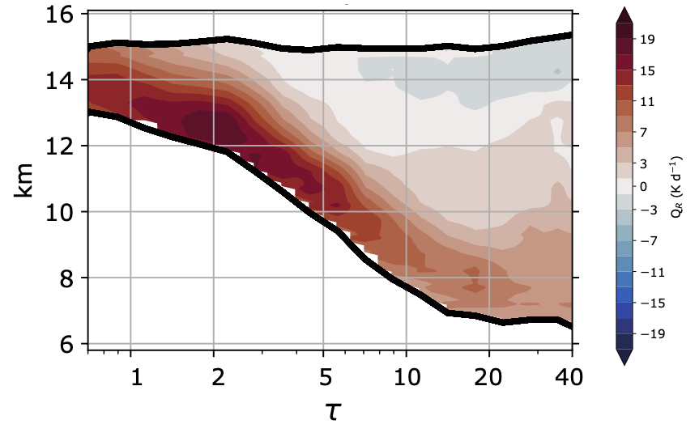

Clouds & Climate
Tropical deep convection produces a wide range of cloud types. Different parts of these cloud systems exert strong positive and negative radiative effects, but the climatological radiative effect of tropical convection is near zero. This balance results from a very specific distribution of convective cloud types, and we are unsure of how it will be affected by climate change. If the radiative balance of tropical convection shifts in the future, it could constitute an important climate feedback.
My work has used satellite observations and cloud-resolving models to study the evolution of convective cloud populations. This has shown that the most common anvil clouds found in the Tropics are those with the strongest climate-warming effect. Using a radiative transfer model and satellite observations of cloud microphysics, we find that these clouds are selectively maintained by radiative heating. Check out our paper on this in JGR-Atmospheres.
We have also found that anvil clouds produced during the daytime have a longer lifetime and a different climate impact than those produced at night. Read the paper here.
More recently, we've studied how convective clouds respond to surface warming in a large ensemble of cloud-resolving models. Our findings suggest that the anvil cloud area feedback is near zero and that the optical depth feedback is slightly positive—which has some important implications for estimates of climate sensitivity. Check out my climate sensitivity symposium talk on this work or our paper in Nature Geoscience.

